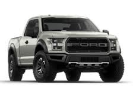
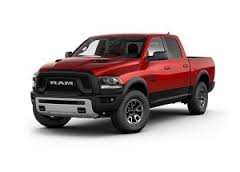

| Fav cars | ||
|---|---|---|
| The Ford F-Series is a series of light-duty trucks and medium-duty trucks (Class 2-7) that have been marketed and manufactured by Ford Motor Company since 1948. While most variants of the F-Series trucks are full-size pickup trucks, the F-Series also includes chassis cab trucks and commercial vehicles. The Ford F-Series has been the best-selling vehicle in the United States since 1981 and the best-selling pickup since 1977.[1][2] It is also the best selling vehicle in Canada.[3] In 1999, to bridge the gap between the pickup line and the medium-duty trucks, the F-250 and F-350 became the Ford Super Duty vehicles; considered an expansion of the F-Series, the Super Duty trucks are built on a distinct chassis with heavier-duty components. As of the 2017 model year, the F-Series includes the F-150, the Super Duty (F-250 through F-550), and F-650 and F-750 Super Duty medium-duty commercial trucks. The most popular version of the F-Series is the F-150, now in its thirteenth generation. Through the use of rebadging, Ford has marketed the F-Series through all three Ford divisions in North America. From 1946 to 1968, Mercury sold the Mercury M-Series in Canada; during the 2000s, Lincoln sold the Lincoln Blackwood, replaced by the Lincoln Mark LT. |  | |
| The Ford F-Series Super Duty (often shortened to Ford Super Duty) is a series of trucks manufactured by Ford Motor Company. Introduced in 1998 for the 1999 model year, the F-Series Super Duty trucks marked the addition of a heavy-duty pickup to the Ford F-Series range, including the F-250 and F-350 pickups; the previous 1987-1997 F-Super Duty chassis cabs were replaced by the F-450 and F-550 Super Duty. Distinguished from the F-150 by its separate bodywork, the Super Duty trucks utilize a distinct chassis from the F-150 with heavier-duty chassis and suspension components to allow for higher payload and towing capacities; additionally, the product line continued the use of Ford PowerStroke diesel engines. With a GVWR over 8,500 lb (3,900 kg); Super Duty pickups are Class 3 trucks while chassis-cab trucks are in the Class 4-5 range. The F-Series Super Duty has been used as the donor chassis of the Ford Excursion full-size SUV and shares the cab with the medium-duty F-Series Super Duty (Ford F-650/F-750) Ford F-250 to F-550 Super Duty trucks are assembled at the Kentucky Truck Plant in Louisville, Kentucky with medium-duty F-650 and F-750s are assembled at Ohio Assembly in Avon Lake, Ohio (prior to 2014, medium-duty trucks were assembled in the Blue Diamond Truck joint venture with Navistar in Mexico). As of 2016, the Ford Super Duty is sold in the United States, Canada, Mexico, Venezuela (F-250 and F-350), Suriname, Brazil (F-350/F-4000), Argentina (F-4000 only), Angola (F-250 and F-350), Cambodia, the Middle East, and Iceland (F-350 only) in LHD only. In Australia, where it was officially imported in RHD from Brazil until 2005, newer American-built units can be imported but must be (source?) converted locally to RHD. In Suriname, even though traffic is on the left side of the road, the import and registry of LHD vehicles is allowed. | | |
| This article is about the full-size truck since Ram's separation from Dodge. For vehicles named Dodge Ram, see List of vehicles named Dodge Ram. Ram Dodge2014ram1500.jpg 2014 Ram 1500 Overview Manufacturer Ram Trucks division of FCA US LLC Production 1981–present Assembly Saltillo, Coahuila, Mexico Warren, Michigan, United States (Warren Truck Assembly) Body and chassis Class Full-size pickup truck Layout Front-engine, rear-wheel drive / four-wheel drive Chronology Predecessor Dodge D Series The Ram pickup (formerly the Dodge Ram pickup) is a full-size pickup truck manufactured by FCA US LLC (formerly Chrysler Group LLC) and marketed as of 2010 onwards under the Ram Trucks brand. Previously, Ram was part of the Dodge line of light trucks. The name Ram was first used in 1981 on the redesigned Ram and Power Ram following the retiring and rebadging of the Dodge D Series pickup trucks as well as B-series vans. Ram trucks have been named Motor Trend magazine's Truck of the Year five times; the second-generation Ram won the award in 1994, the third-generation Ram Heavy Duty won the award in 2003, the fourth-generation Ram Heavy Duty won in 2010 and the current Ram 1500 won in 2013 and 2014. The Ram is manufactured at Saltillo Truck Assembly in Saltillo, Coahuila, Mexico and Warren Truck Assembly in Warren, Michigan, United States. Contents [hide] 1 First generation (1981–1993; D/W) 1.1 Engines & transmissions 1.1.1 5.9 Cummins 1.2 Engines 2 Second generation (1993–2001/2002; BR/BE) 2.1 1998 updates 2.2 Drivetrain 2.2.1 Transmissions 2.2.2 Transfer cases 2.2.3 Axles 2.3 Engines 3 Third generation (2001/2002–2008; DR/DH/D1/DC/DM) 3.1 2006 Facelift 3.2 Chassis Cab 3.3 Engines 3.4 Axles 4 Fourth generation (2009–present; DS/DJ/D2) 4.1 Class exclusive manual transmission 4.2 Cab options 4.3 Handling 4.4 Payload capacities 4.5 Heavy Duty Chassis Cabs 4.5.1 Concept truck 4.6 Safety 4.7 2013 changes 4.7.1 3500 4.7.2 4x4 4.7.3 High Fuel Efficiency 4.8 2014 changes 4.9 Production 4.10 Engines 4.11 Plug-in hybrid 5 Issues 5.1 Fire incident, Hybrid, 2012 5.2 Remote Control, Software, Uconnect Entertainment System, 2015 6 Gallery 7 Special Edition Rams 7.1 Nissan Titan 8 Motorsport 9 World markets 9.1 Gray import gallery 10 Sales 11 References 12 External links |  |